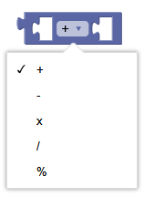
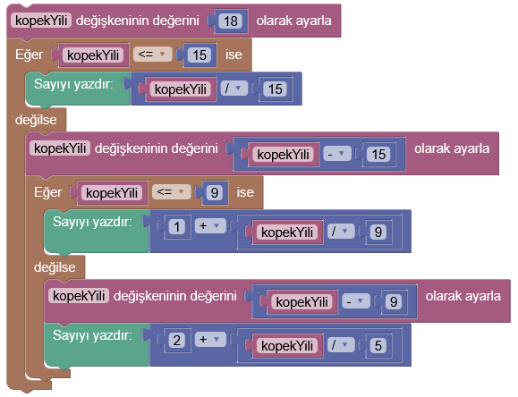

Yapboz Nedir?
Yapboz, kullanıcıların yapboz benzeri bloklar kullanarak programlama yapabildiği bir platformdur. Kullanıcının oluşturduğu blokların Python dilindeki karşılığı uygulamanın sol tarafında "Oluşturulan Kod" kısmında görünür. Uygulama çalıştırılıp elde edilen çıktılar ise "Uygulama Çıktısı" kısmında görünür. Kullanıcı, uygulamanın yapay zekasına soru sorup cevap alabilir ve yazdığı kodları indirip geri yükleyerek kaldığı yerden devam edebilir.
İlk Programlarım
Merhaba Dünya!
"Yazdır" kategorisinden "Yazı yazdır" bloğunu çalışma alanına sürükleyin ve içine "Merhaba Dünya!" yazın ve çalıştırın.
Tebrikler! Yazılım dünyasına "Merhaba" dediniz ve İlk programınızı yazdınız!
Toplama İşlemi
"Sayılar" kategorisinde sayı ve aritmetik işlem blokları bulunmaktadır. Sayı bloğunu ve Sayı yazdırma bloğunu çalışma alanına sürükleyin ve birleştirin. İçine herhangi bir sayı yazın ve çalıştırın.
Benzer şekilde, aritmetik işlem bloğunu kullanarak iki sayının toplamını da ekrana yazdırabilirsiniz.
Aritmatik işlem bloğunun hangi işlemi yapacağını aşağıdaki şekilde seçebilirsiniz.
Değişkenler
Değişkenler, içinde belirli bir değer tutan yapılardır. Elde ettiğimiz veriler için geçici depolama sağlar ve yazdığımız kodları düzenli tutar. Uygulamanın "Değişkenler" kategorisinde değişkenlerin değerlerini belirlemeyi ve kullanmayı sağlayan bloklar bulunuyor. Aşağıdaki örnekte x isimli bir değişken oluşturulup değeri 5 olarak ayarlanmıştır ve ardından x değişkeninin değeri ekrana yazdırılmıştır.
Değişken değerini değiştirme
Bir değişkenin değerini değiştirmek için, değişken değeri ayarlama bloğu yeniden kullanılabilir. Aşağıdaki örnekte uygulama çıktısı, 7 olacaktır.

Bir değişkenin değerini arttırmak için ise aritmetik blokları kullanılabilir.

Örnek: Not hesaplama
Vize sınavının %40'ı ve final sınavının %60'ı alınarak not hesaplayan programı oluşturunuz.
Çözüm:
Karar Yapıları
Belirli bir koşul sağlandığı zaman çalışan bloklar karar yapılarıdır. Uygulamada iki tane karar yapısı bulunuyor. "Eğer" yapısı, sadece koşul sağlandığı zaman içindeki blokları çalıştırır. "Eğer-değilse" bloğu koşul sağlandığında üstteki kodları, sağlanmadığında alttaki blokları çalıştırır.
Örnek: Dersten geçti/kaldı
Bir dersten geçmek için 50 ve üstü not almak gereksin. Dersten geçme ve kalma durumunu hesaplayan programı oluşturunuz.
Çözüm:

Bir önceki örnek ile birleştirirsek:

İç içe karar yapıları
Birden fazla koşulun sağlanıp sağlanmadığı kontrol edilecekse karar yapıları iç içe yazılabilir.

Örnek: Köpek yaşı hesaplama
Köpeklerin ilk yılı 15 insan yaşına, ikinci yaşı 9 insan yaşına ve sonraki her yıl 5'er insan yaşına denk gelir. Köpek yaşının insan yaşına çevirilebilmesi için gerekli programı oluşturunuz.
Çözüm:
Döngüler
Döngüler, belirli blokların tekrarlı şekilde oynatılmasını sağlar. "Döngüler" kategorisinde iki tür döngü ve bir döngü sonlandırma bloğu bulunmaktadır.

Sayı tekrarlı döngüler
İçindeki blokların belirli sayıda tekrar edilmesini sağlar.
Koşullu döngüler
İçindeki blokların belirli bir durum gerçekleştiği sürece tekrar edilmesini sağlar. Aşağıdaki program 6'ya kadarki bütün sayıları ekrana yazdır

Döngü sonlandırma
Döngüyü koşula bakmaksızın durdurup döngüden sonraki bloğa geçer. Böylece program istenilen sonucu elde ettikten sonra döngüyü sonuna kadar devam ettirmez.
Örnek: Asal sayıları sayma
Belirli bir sayıya kadarki asal sayıları ekrana yazdıran programı oluşturunuz
Çözüm: